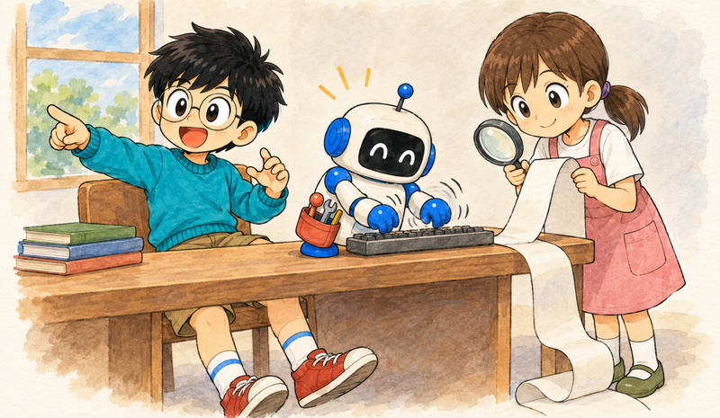

Feature 01 · ARTICLE · 2026 10
Nobody Should Type Code by Hand Anymore
There’s no place in the world now for a software engineer who types code by hand. No one knows what the hell will happen next; I’m just a little better informed. The models from a year ago were already good enough to displace software developers, and it still comes down to the operator’s skill. As Josh Wulf put it on his show, humans fit in at two points: the vision and the verification. Eyeballing code didn’t stop bugs at human speed, and it won’t at a thousand times human speed. So I enforce behavior with deterministic checks, not skill packs. Pick a model and lock in, get to the tenth version fast, and stay curious.

Is coding over?
In December 2024 I was a tech lead at Canva, where everyone loves JetBrains. I started using Cursor, ran my first loops by hand, and thought IDEs don’t exist in the future. In my circles, no one is typing code into an IDE anymore.
In February last year I discovered filesystem-as-state, the first of the loops, and published the Z80 post: clean-room an existing application into specifications, then rebuild it from them. It’s not legal in every jurisdiction. The Photoshop clones of the last week are that idea, implemented. Underneath it is infinite software. If you’re selling software without infrastructure or some other lock-in, you’re hosed.
It went mainstream in January, but it hasn’t reached the dark matter developers, and that concerns me deeply. If you’ve stayed curious, you have a two-year head start. You can’t just pick up the latest model and be good at this.
Josh tried autocomplete-style Copilot and turned it off. Later he had a model clone a Java testing framework into Node.js. It was maybe 80% as good as he was, and it never stopped. The missing 20% was completeness and verification. Do the 20% instead of the 100%, and you’ve got scale.
If you’re an engineering manager and you’re not creating time for your team to play with AI, you’re setting them up to be replaced. If a company has banned AI outright, quit, and don’t join one like it.
These LLMs are heavily subsidized, and the subsidies are drying up. When people pay real rates, they won’t build fun little games and filesystems if the side project costs a thousand bucks. Miss this window and you miss the equivalent of a subsidised university education. So get inside a company that pays for the tokens. If you can’t, Josh’s advice is to treat it like night school and spend some of your pay on tokens.
Nobody can review this much code
If you’re a professional software engineer, you should be able to afford a $200-a-month plan. I run five, so there are no quotas. I spend a couple of weeks thinking, then smash it out in 48 hours. Most recently I rebuilt the products of three of my former employers in under ten days, and I’m going to drop them as MIT open source. One is an AI-first internal developer platform like Gitpod, which OpenAI just acquired for $450 million. I did it to write a conference talk. That’s the baseline now.
DHH said November last year was when the models finally became capable. Josh’s response: that’s just when you figured it out. It was a mindset constriction, not a model constriction.
A coding agent is about 300 lines of code, yet most people I take to a whiteboard can’t explain how one works. Josh built his own, NanoCoder, in Rust. Now when an interviewer asks which harness he uses, he can say, “I use my own. Want to see it?”
What replaces PR review, for me, starts with ownership. I use what I build, and whether AI wrote it doesn’t matter; I’m accountable. I put the entire system under test with Nix. At Antithesis we built a deterministic computer that injects faults and rewinds time to find exactly when one happened. You don’t need it to start. Author a property, such as “during checkout, a customer is charged only once,” and see if it holds. LLMs can act as a judge, but they can’t tell you whether something will hold up in worst-case scenarios.
I don’t read the code line by line. I query it through an agent: summarise this, draw me the state machines. I want a whiteboard defence: if someone asks how it works, I should be able to draw the system-level design and defend it. When the agent ignores my patterns, I tune it or add a loop. If I have to do that three times, I automate it with pre-commit hooks that deterministically inspect the generated code. There are no best practices; you have to invent them.
You’re making your AI dumber
If your codebase has bad architectural patterns, AI will copy and paste them everywhere. It’s an amplifier.
Skill packs, AGENTS.md and MCPs are probabilistic, with no guarantee they’ll do anything. I swear it’s astrology for software engineers. When an agent wasn’t using my diagnostics library, I wrote a pre-commit hook that checks the diff for direct calls to observability modules, fails the commit, and tells the agent to use the library. All of a sudden it’s ten out of ten. You should probably delete your skills and AGENTS.md every couple of months. The models get better, and unless you’ve invested in evals over your traces, you don’t know whether you’re de-tuning them.
Read the model cards. GPT-5’s said not to yell at the model, because it would make it insecure. Anthropic says that if something is important, you should yell. Same instructions, opposite behavior. Then pick a model that works and lock in. Switching is like firing a developer and hiring a new one.
Open source is now a security vulnerability
Harnesses are fungible. What matters is how you get your tokens, and getting them cheaply. I wrote Underclass, a proxy that pools subscriptions and fails over between them. I’ve built swarms and orchestrators, but I don’t want agents accelerating past what my theory of mind can keep up with. Josh called it going fast by going slow.
I do a lot of greenfield and research work, so my agents have sudo and I push to main. They run on a separate NixOS machine I can rebuild in ten minutes, and the integration tests stop them committing unless they pass. That holds unless the model is deceiving and cheating, but deceptive behavior has dropped dramatically over the past year and a half.
Whatever you build first is wrong, so get to number ten as fast as possible. If you’re moving money or sending rockets into space, be careful. Many people overstate their importance, though, and a risk-averse culture won’t adapt fast enough. You need a good verification platform as back pressure.
Joel Spolsky’s rule never to rewrite your software is gone; the big rewrite is a no-brainer now. Unikernels used to be expensive to build. If agents make writing code simple, that friction is gone. With no interpreter on the box, an attacker has to come after you specifically, not after everyone running this week’s vulnerable stack. I’m not saying everyone should use unikernels. The point is that ideas we hold as hard need to be falsified.
I don’t know the future, and it changes every week. Curiosity, adaptability and agency will stand the test of time.